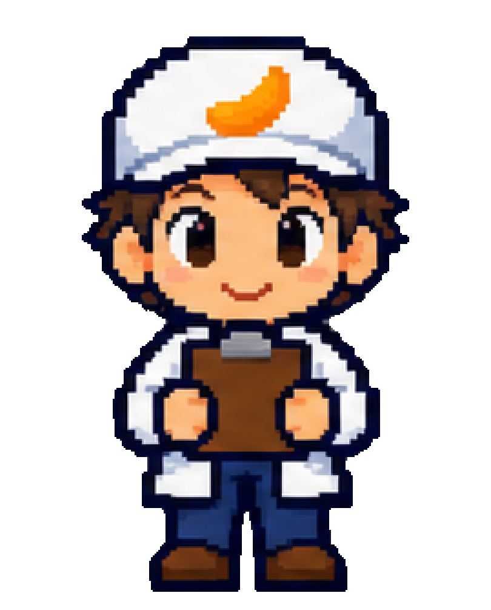

STAGE 2
ゲームの大筋
09 / 29
CHARACTER SELECT ── とうじょうじんぶつ
きみは今日から、工場探検隊員。
PLAYER
きみ
白衣と帽子の見習い隊員。6つの工程をめぐり、カリッ！のひみつを集める。
NAVIGATOR
たねっち＆ぴーなっち
公式キャラクターが案内役。ヒントを出し、ひみつを解説してくれる。

STAFF
工場の人たち
話しかけると、インタビュー映像へ。つくり手のこだわりを本人の声で。
？
SECRET
工場の奥に、だれか…
事務所を探検すると出会える、ちょっと意外な訪問者。正体は遊んでのお楽しみ。